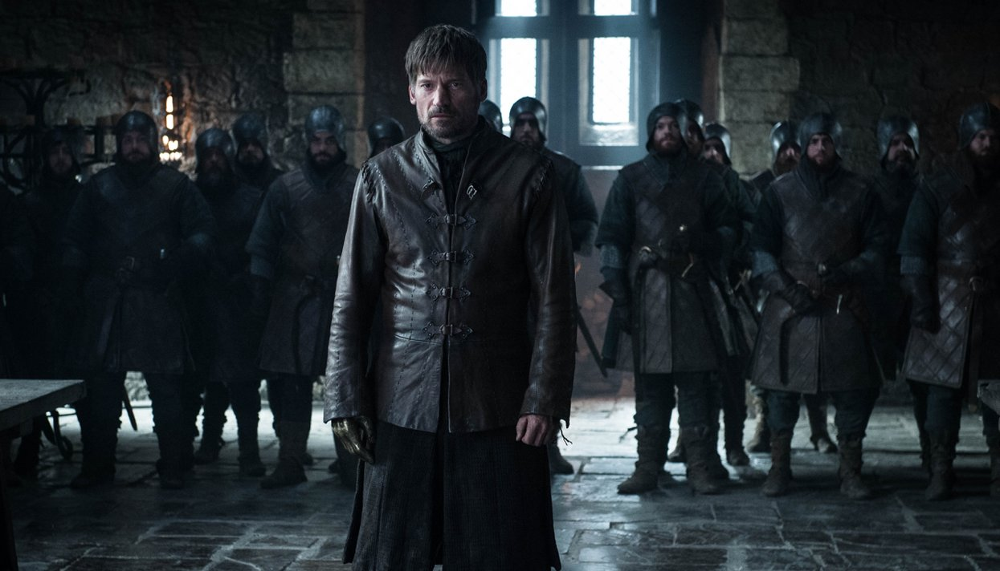

Первая серия восьмого сезона «Игры Престолов»

Поменялась заставка. Теперь вместо Семи Королевств и заморских территорий на ней всего три горячие точки: Винтерфелл, Королевская Гавань и маленькая крепость Последний Очаг, лежащая между домом Старков и разрушенной Стеной.
Армия Безупречных, дотракийская конница, два дракона, Дейенерис, Джон Сноу, сопровождающие их Миссандея, Серый Червь, Варис, Тирион, Джорах Мормонт, Сандор «Пес» Клиган и бастард Роберта Баратеона Джендри вошли в Винтерфелл.
Санса сдержанно обрадовалась Джону, бросила настороженный взгляд на Дейенерис и сказала ей: «Королева, Винтерфелл ваш». Знакомство прервал Бран Старк. От него Дейенерис узнала, что дракон Визерион превратился в летающего вихта (подконтрольного белым ходокам зомби), а Король Ночи вторгся в Вестерос. Арья радушно встретилась с Джоном у семейного Чардрева, Бран холодно сказал Джону, что он (Бран) теперь не совсем человек, а Санса посоветовала Джону не забывать, что тот часть семьи. Эти слова он еще вспомнит позже, когда узнает, что он — Таргариен.
Вторая серия восьмого сезона «Игры Престолов»
Джейме Ланнистер предстал перед Дейенерис (и назвал ее королевой!), Джоном, Сансой и всеми лордами Севера. Он сказал, что армия Серсеи не придет, но для рыцаря долг перед живыми людьми важнее присяги, так что он готов защищать Винтерфелл. Дейенерис и Санса сначала не приняли Джейме, но за Ланнистера вступилась Бриенна Тарт. И Санса изменила свое решение: «Я доверяю вам свою жизнь. Если вы доверяете ему свою, то он может остаться». Джейме вернули меч, теперь он будет оборонять левый фланг Винтерфелла под командованием Бриенны. Паре придется несладко: у западной стены Винтерфелла расположена Богороща, в которой решено ждать Короля Ночи.
На обсуждении перед битвой Джон сказал, что единственный шанс победить Ходоков — это сразить их главу. Немногословный Бран вдруг предложил устроить ловлю на живца: он считает, что Король Ночи пришел именно за Трехглазым вороном, потому что он — хранитель истории Вестероса, а чтобы уничтожить человечество, нужно стереть всю память о нем. На Бране есть метка, и Король знает, где его найти. Так что теперь мальчик будет ждать неприятеля в Богороще, а остальные — сидеть в засаде.